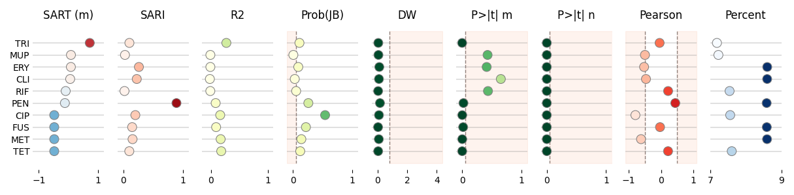

Note
Click here to download the full example code
Table Scatterplot¶
Example using your package
Out:
Data:
idx org abx sart sari r2 jb dw ptm ptn pearson percent
0 9 SAUR TRI 0.720 0.100 0.274 0.112 0.056 0.000 0.0 -0.046 7.189
1 8 SAUR MUP 0.084 0.025 -0.007 0.009 0.064 0.429 0.0 -0.499 7.230
2 7 SAUR ERY 0.082 0.260 -0.007 0.092 0.123 0.414 0.0 -0.526 8.604
3 6 SAUR CLI 0.058 0.224 -0.016 0.033 0.099 0.653 0.0 -0.468 8.602
4 5 SAUR RIF -0.093 0.017 -0.008 0.056 0.043 0.436 0.0 0.217 7.545
5 4 SAUR PEN -0.120 0.894 0.086 0.262 0.168 0.022 0.0 0.439 8.588
6 0 SAUR CIP -0.480 0.200 0.166 0.545 0.100 0.002 0.0 -0.795 7.562
7 1 SAUR FUS -0.480 0.146 0.094 0.221 0.038 0.017 0.0 -0.033 8.592
8 2 SAUR MET -0.480 0.153 0.174 0.144 0.090 0.002 0.0 -0.621 8.599
9 3 SAUR TET -0.480 0.098 0.184 0.125 0.045 0.001 0.0 0.215 7.606
7 8 9 10 11 12 13 14 15 16 17 18 19 20 21 22 23 24 25 26 27 28 29 30 31 32 33 34 35 36 37 38 39 40 41 42 43 44 45 46 47 48 49 50 51 52 53 54 55 56 57 58 59 60 61 62 63 64 65 66 67 68 69 70 71 72 73 74 75 76 77 78 79 80 81 82 83 84 85 86 87 88 89 90 91 92 93 94 95 96 97 98 99 100 101 102 103 104 105 106 107 108 109 110 111 112 113 114 115 116 117 118 119 120 121 122 123 124 125 126 127 128 129 130 131 132 133 134 135 136 137 138 139 140 141 142 143 144 145 146 147 148 149 150 151 152 153 154 155 156 157 158 159 160 161 162 163 164 165 166 167 168 169 170 171 172 173 174 175 176 177 178 179 180 181 182 183 184 185 186 187 188 189 190 191 192 193 194 195 196 197 198 199 200 201 202 203 204 205 206 207 208 209 210 211 212 213 214 215 216 217 218 219 220 221 222 223 224 225 226 227 228 229 230 231 232 233 234 235 236 237 238 239 240 241 242 243 244 245 246 247 248 249 250 251 252 253 254 255 256 257 258 259 260 261 262 263 264 265 266 267 268 269 270 271 272 273 274 275 276 277 278 279 280 281 282 283 284 285 286 287 288 289 290 291 292 293 294 295 296 297 298 299 300 301 302 303 304 305 306 307 308 309 310 311 312 313 314 315 316 317 318 319 | # Libraries
import numpy as np
import pandas as pd
import seaborn as sns
import matplotlib.pyplot as plt
import matplotlib.gridspec as gridspec
from matplotlib import colors
# -----------------------------------------------------------
# Helpers
# -----------------------------------------------------------
class MidpointNormalize(colors.Normalize):
"""Normalise the colorbar so that diverging bars
work there way either side from a prescribed
midpoint value)
Example
-------
> MidpointNormalize(midpoint=0., vmin=-100, vmax=100)
"""
def __init__(self, vmin=None,
vmax=None,
midpoint=None,
clip=False):
"""Constructor
"""
self.midpoint = midpoint
colors.Normalize.__init__(self, vmin, vmax, clip)
def __call__(self, value, clip=None):
"""Call
.. note: Ignoring masked values and all kind of edge cases
to keep it simple.
"""
# I'm ignoring masked values and all kinds of edge cases to make a
# simple example...
x, y = [self.vmin,
self.midpoint,
self.vmax], [0, 0.5, 1]
return np.ma.masked_array(np.interp(value, x, y), np.isnan(value))
def vlinebgplot(ax, top, xv, bg=None):
"""This function adds a vertical line and background
Parameters
----------
ax: matplotlib axes
top: float
The max y value
xv: float
The x value
bg: boolean
Whether to include a background
Returns
-------
"""
# Plot line.
ax.plot((xv, xv), (-1, top), color='gray',
linestyle='--', linewidth=1, zorder=0)
# Plot background.
if bg is not None:
cb = sns.color_palette("Set2", 10)[1]
ax.fill_between([xv, bg], [-1, -1], [top, top],
zorder=0, alpha=0.1, color=cb)
# -------------------
# PLOTTING SETTINGS
# -------------------
# Configuration for each columns
info_sari = {
'cmap':'Reds',
'title':'SARI',
'xlim':[-0.1, 1.1],
'xticks':[0, 1],
'norm': colors.Normalize(vmin=0, vmax=1),
}
info_sari_lr = {
'cmap':'Reds',
'title':'SARI-lr',
'xlim':[-0.1, 1.1],
'xticks':[0, 1],
'norm': colors.Normalize(vmin=0, vmax=1),
}
info_sart = {
'cmap':'RdBu_r',
'title':'SART',
'xlim':[-1.2, 1.2],
'xticks':[-1, 1],
'norm': colors.Normalize(vmin=-1, vmax=1),
}
info_r2 = {
'cmap':'YlGn',
'title':'R2',
'xlim':[-0.15, 1.1],
'xticks':[0, 1],
'norm': colors.Normalize(vmin=0, vmax=1),
}
info_jb = {
'cmap':'YlGn',
'title':'Prob(JB)',
'xlim':[-0.1, 1.1],
'xticks':[0, 1],
'vline':[{'xv':0.05, 'bg':-0.1}],
'norm': colors.Normalize(vmin=0, vmax=1),
}
info_dw = {
'cmap':'YlGn_r',
'title':'DW',
'xlim':[-0.4, 4.4],
'xticks':[0, 2, 4],
'vline':[{'xv':0.8, 'bg':4.4}],
'norm': colors.Normalize(vmin=0, vmax=4),
}
info_freq = {
'cmap':'Blues',
'title':'Freq',
'xticks':[0,40000,80000],
'kwargs': {
's':80,
'vmin':0}
}
info_pearson = {
'cmap':'Reds',
'title':'Pearson',
'xlim':[-1.1, 1.1],
'xticks':[-1, 0, 1],
'vline':[{'xv':-0.5, 'bg':-1.1},
{'xv':0.5, 'bg':1.1}],
'norm': colors.Normalize(vmin=-1, vmax=1),
}
info_kendall = {
'cmap':'Reds',
'title':'Kendall',
'xlim':[-1.1, 1.1],
'xticks':[-1, 0, 1],
'vline':[{'xv':-0.5, 'bg':-1.1},
{'xv':0.5, 'bg':1.1}],
'norm': colors.Normalize(vmin=-1, vmax=1),
}
info_spearman = {
'cmap':'Reds',
'title':'Spearman',
'xlim':[-1.1, 1.1],
'xticks':[-1, 0, 1],
'vline':[{'xv':-0.5, 'bg':-1.1},
{'xv':0.5, 'bg':1.1}],
'norm': colors.Normalize(vmin=-1, vmax=1),
}
info_kurtosis = {
'cmap':'Reds',
'title':'Kurtosis',
#'xlim':[-1.1,1.1],
#'xticks':[-1,0,1],
'vline':[],
'norm': colors.Normalize(vmin=-1, vmax=1),
}
info_omnibus = {
'cmap':'Reds',
'title':'Omnibus',
'vline':[{'xv':0.05, 'bg':1.1}],
'norm': colors.Normalize(vmin=-1, vmax=1),
}
info_slope = {
'name':'x1_tprob',
'cmap':'YlGn_r',
'title':'P>|t| m',
'xlim':[-0.1, 1.1],
'xticks':[0, 1],
'vline':[{'xv':0.05, 'bg':1.1}],
'norm': MidpointNormalize(vmin=0, vmax=1, midpoint=0.5),
}
info_coefficient = {
'name':'c_tprob',
'cmap':'YlGn_r',
'title':'P>|t| n',
'xlim':[-0.1 ,1.1],
'xticks':[0, 1],
'vline':[{'xv':0.05, 'bg':11.1}],
'norm': MidpointNormalize(vmin=0, vmax=1, midpoint=0.5),
}
info_percent = {
'name':'freqo_abx',
'cmap':'Blues',
'title':'Percent',
'xlim':[7,9],
'xticks':[7, 9],
'vline':[],
}
# Now we combine all of them together. Note
# that the key value corresponds to the name
# of the column it should be applied to.
info = {
'sari': info_sari,
'sart': info_sart,
'dw': info_dw,
'r2': info_r2,
'pearson': info_pearson,
'jb': info_jb,
'percent': info_percent,
'ptm': info_slope,
'ptn': info_coefficient
}
# -------------------------------------------
# Main
# -------------------------------------------
# Create data
data = [[9, 'SAUR', 'TRI', 0.720, 0.100, 0.274, 0.112, 0.056, 0.000, 0.0, -0.046, 7.189],
[8, 'SAUR', 'MUP', 0.084, 0.025, -0.007, 0.009, 0.064, 0.429, 0.0, -0.499, 7.230],
[7, 'SAUR', 'ERY', 0.082, 0.260, -0.007, 0.092, 0.123, 0.414, 0.0, -0.526, 8.604],
[6, 'SAUR', 'CLI', 0.058, 0.224, -0.016, 0.033, 0.099, 0.653, 0.0, -0.468, 8.602],
[5, 'SAUR', 'RIF', -0.093, 0.017, -0.008, 0.056, 0.043, 0.436, 0.0, 0.217, 7.545],
[4, 'SAUR', 'PEN', -0.120, 0.894, 0.086, 0.262, 0.168, 0.022, 0.0, 0.439, 8.588],
[0, 'SAUR', 'CIP', -0.480, 0.200, 0.166, 0.545, 0.100, 0.002, 0.0, -0.795, 7.562],
[1, 'SAUR', 'FUS', -0.480, 0.146, 0.094, 0.221, 0.038, 0.017, 0.0, -0.033, 8.592],
[2, 'SAUR', 'MET', -0.480, 0.153, 0.174, 0.144, 0.090, 0.002, 0.0, -0.621, 8.599],
[3, 'SAUR', 'TET', -0.480, 0.098, 0.184, 0.125, 0.045, 0.001, 0.0, 0.215, 7.606]]
# Create dataframe
data = pd.DataFrame(data, columns=['idx', 'org', 'abx',
'sart', 'sari', 'r2', 'jb', 'dw', 'ptm', 'ptn',
'pearson', 'percent'])
# Show
print("\nData:")
print(data)
#print("\nData stacked:")
#print(data.stack())
# Filter features
data = data[data.columns[2:]]
# -------------------------------------------
# Pair Grid
# -------------------------------------------
# Create pair grid
g = sns.PairGrid(data, x_vars=data.columns[1:],
y_vars=["abx"], height=3, aspect=.45)
# Draw a dot plot using the stripplot function
# g.map(sns.stripplot, size=10, orient="h", jitter=False,
# palette="flare_r", linewidth=1, edgecolor="w")
# Set common features
g.set(xlabel='', ylabel='')
# Plot strips and format axes
for ax, c in zip(g.axes.flat, data.columns[1:]):
# Get information
d = info[c] if c in info else {}
# Display
# sns.stripplot(data=data, x=title, y='abx', size=10,
# orient="h", jitter=False, linewidth=0.75, ax=ax,
# edgecolor="gray", palette=d.get('cmap', None))
# color='b')
# .. note: We need to use scatter plot if we want to
# assign colors to the markers according to
# their value.
# Using scatter plot
sns.scatterplot(data=data, x=c, y='abx', s=100,
ax=ax, linewidth=0.75, edgecolor='gray',
c=data[c], cmap=d.get('cmap', None),
norm=d.get('norm', None))
# Plot vertical lines
for e in d.get('vline', []):
vlinebgplot(ax, top=data.shape[0], **e)
# Configure axes
ax.set(title=d.get('title', c),
xlim=d.get('xlim', None),
xticks=d.get('xticks', []),
xlabel='', ylabel='')
ax.tick_params(axis='y', which='both', length=0)
ax.xaxis.grid(False)
ax.yaxis.grid(b=True, which='major',
color='gray', linestyle='-', linewidth=0.35)
# Despine
sns.despine(left=True, bottom=True)
# Adjust layout
plt.tight_layout()
# Show
plt.show()
|
Total running time of the script: ( 0 minutes 0.553 seconds)